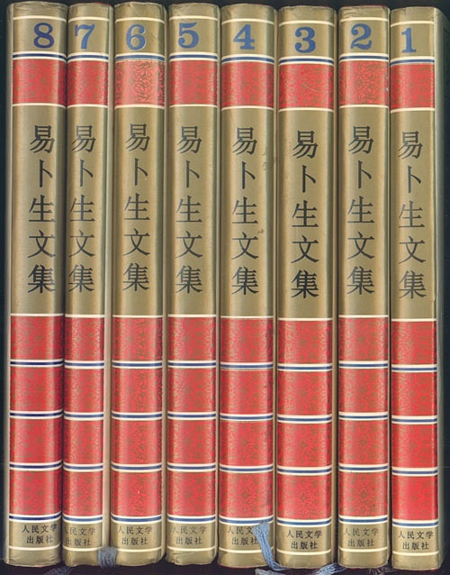
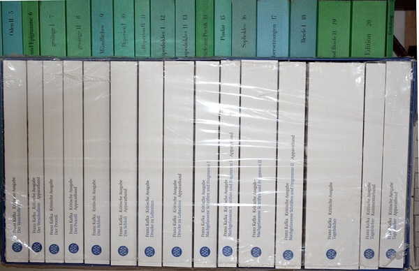

里尔克的易卜生——兼人民文学八卷本《易卜生文集》让书记
|  |
计邮费365元卖出（Dasha邮寄实际花了32元） |
刚刚Gmail传来信息“买家醉卧书丛已对订单作出评价”，于是这一个占据Dasha书柜的大鸡肋终于“嫁个好人家”。是为之记。
当初买这套《文集》，是为了读里尔克的《马尔特手记》（Die Aufzeichnungen des Malte Laurids Brigge），后来弄了套超星的PDG清晰版，已经够用，但觉得对不起易卜生，于是买了这套《文集》。易卜生一生创作了二十六部剧作，潘家洵一人独译十七部。或谓潘“虽自英文转译，但语言准确、生动，传神”。【《中国大百科全书 戏剧》】可惜Dasha偏执，不敢苟同。阅读过程中，每每骂娘，关键之处，更只能翻词典查挪威文参考德、英译本……更可惜的是，被国人分外推崇的这位易卜生，迄今未有据原文译出的译本，Dasha说事，也只能依据这人民文学出版社八卷本的以潘家洵译本为主的《易卜生文集》。
如今，是书既已易手，正好为http://book.douban.com/subject/4897210/腾出2/5的空间，因此，对书友“醉卧书丛”兄表示感激之余，顺手对这段历时数年的阅读做个了断。
Dasha试译：
在此，我坐在你的书前，固执的人啊，我试图像其他人一样看待你的书，那些人不让你全整、心安理得地占据属于他们的那部分。因为在此我还不理解名誉：名誉是对一个成长者的公然拆毁——一群人闯入成长者的工地，搬走他的石材。
萍踪无定的年轻人啊，你的心中升起某种令你战栗之物的时候，要善加利用“无人认识你”。当那些视你为什么也不是的人，他们反对你时；当那些你与之交往的人，他们认为你无可救药时；当他们因你可爱的思想而企图根除你时，相对于后来名誉狡诈的敌意一边散播你一边使你变得无害，这明显的危险在你心中束缚着你，又算得了什么。
不要企望任何人会谈及你，哪怕蔑视也好。当时间流走，你发觉你的名字在人群中游走时，不要以为你的名字比所有你从他们口中得来的名字更严肃。要想到你的名字已变得残缺败劣，脱下它吧。启用另一个名字吧，随便一个，只要上帝在夜里能够用以将你呼唤。且对所有人隐瞒它。
你啊寂寞至极者，怪癖的人，因你的名声他们是何等地欢迎你。曾几何时，他们完全彻底地反对你，如今他们看待你，就像是他们的同类。你的文字，他们用他们狂妄的籓笼随身携带着，在广场上将它们展览，在安全的距离中一点点挑逗它们——所有的你令人畏惧的猛兽。
在此我第一次读你，于是从我身上渗出、在我的旷野里向我袭来的是，绝望。绝望，就像你本人最终那样，你，你的路被错误地标画在每一张地图上。仿佛一道罅隙横贯长天，你的道路无望的双曲线，只是向我们弯垂而近一次，就充满惊骇地去远。你关注的是什么？一个女人是留下还是离去，一个人是不是陷于昏迷，一个人是不是已经疯狂，死去的人是不是还活着，活着的人是不是像死了一样：你关注的是什么？这所有的一切在你眼中自然而然；就像人们穿过前厅，你穿过这一切，脚步不停。然而在那里你却停了下来，你弯下腰，里面，我们的事件在沸腾、在凝露、在变换颜色。比一个人所曾到过的更里面，一扇门为你而开，你正置身于火光中的众多烧瓶中间。那里，你从未带人进去过，多疑的人啊，那里你坐着、辨别着过渡。那里，因为存在于你血液里的是揭示而不是塑造与述说，那里你秉持无比巨大的决心，将你本人最初仅仅凭藉玻璃器皿觉察出的细微之物，完全独自地放大，使之庞大地，在前人面前，在一切人面前。你的戏剧创生了。你无法等待这几乎没有空间地被数百年压缩成液滴的生命被其他艺术发现，渐渐显现给若干一点一点达成洞见、最终要求共同看见显赫的传闻在他们面前展开的场景的比喻中得到证实的人。对此你无法等待，你在那里，你必须将那几乎不可测量之物：上升了半度的一种情感、一个几乎无物重压的意志你在至近之处读出来的偏转角度、一滴渴望里的轻微混浊和一粒信赖原子中的颜色变换的虚无——这些，你必须查明并加以保存；因为此刻存在于这些过程里的是生命，我们的生命，翔入我们身内的生命，这生命退隐到内部，深深地，以至于我们对其还几乎不曾有猜想。
你啊，着眼于展示的人，一个不受限于时代的悲剧诗人，你必须将这根毛细血管骤然间转换成最有说服力的动作、转换成最具现存性的事物。于是你开始施行你的作品史无前例的暴力行动，越来越按耐不住、越来越绝望地在可见之物中为内心的所见之物找寻等价物。一只家兔，一个阁楼，一个人在里面往来蹀躞的厅堂：隔壁一阵玻璃撞击，窗外一场大火，还有太阳。一座教堂和一道形似教堂的峡谷。但是这些并不足够，最终必须进到教堂钟楼和群山之中；而雪崩，埋葬了风景，掩埋了为不可思议之物而挂满可触之物的舞台。于是你不再能够。被你弯曲在一起的两端，突然弹起分开；你疯狂的力量从弹性的杖杆中逸去，你的作品仿佛并不存在。
临终你不肯离开窗前，固执得一如既往，这些，又有谁理解你？你渴望看见往来的行人，因为你突然想知道，当人决定开始的时候，是不是无法一朝用这些人制造出些什么。
傻按：
“一个女人……像死了一样”：指《玩偶之家》（Et Dukkehjem，Ein Puppenheim，A Doll's House）、《建筑师》（Bygmester Solness，Baumeister Solness，The Master Builder，按：依据原文当译作《建筑师索尔尼斯》）、《群鬼》（Gengangere，Gespenster，Ghosts）、《罗斯莫庄》（Rosmersholm）、《咱们死人醒来的时候》（Når vi døde vågner，Wenn wir Todten erwachen，When We Dead Awaken）。
“一只家兔……可触之物的舞台”：分别指《野鸭》（Vildanden，Die Wildente，The Wild Duck）、《群鬼》和《布朗德》（Brand）。
最后一段，
里尔克的《慕佐书简》中有云：Ibsen verbrachte seine letzten Tage am Fenster, neugierig die Vorübergehenden beobachtend und diese Wirklichen gewissermaßen mit denjenigen Gestalten verwechselnd, die zu schaffen gewesen wären und von denen er nicht mehr sicher war, sie gemacht zu haben.
此外：易氏暮年，常为病魔所扰，际此枕席缠绵之候，常作呓语以表其痛苦。《群鬼》一剧中欧士华之将死也，唤其母取太阳为己玩弄，而易氏亦常痴望窗外，喃喃自语曰：“小日乎！”……
袁振英著《易卜生传》，香港: 受匡出版部, 1928年，P86-87
During his long illness Ibsen was troubled by aphasia, and he expressed himself painfully, now in broken Norwegian, now in still more broken German. His unhappy hero, Oswald Alving, in Ghosts, had thrilled the world by his cry, "Give me the sun, Mother!" and now Ibsen, with glassy eyes, gazed at the dim windows, murmuring "Keine Sonne, keine Sonne, keine Sonne!"
Henrik Ibsen. by Edmund Gosse. New York: Charles Scribner' s sons, 1908. P208-209
里尔克原文：
Da saß ich an deinen Büchern, Eigensinniger, und versuchte sie zu meinen wie die andern, die dich nicht beisammen lassen und sich ihren Anteil genommen haben, befriedigt. Denn da begriff ich noch nicht den Ruhm, diesen öffentlichen Abbruch eines Werdenden, in dessen Bauplatz die Menge einbricht, ihm die Steine verschiebend.
Junger Mensch irgendwo, in dem etwas aufsteigt, was ihn erschauern macht, nütz es, daß dich keiner kennt. Und wenn sie dir widersprechen, die dich für nichts nehmen, und wenn sie dich ganz aufgeben, die, mit denen du umgehst, und wenn sie dich ausrotten wollen, um deiner lieben Gedanken willen, was ist diese deutliche Gefahr, die dich zusammenhält in dir, gegen die listige Feindschaft später des Ruhms, die dich unschädlich macht, indem sie dich ausstreut.
Bitte keinen, daß er von dir spräche, nicht einmal verächtlich. Und wenn die Zeit geht und du merkst, wie dein Name herumkommt unter den Leuten, nimm ihn nicht ernster als alles, was du in ihrem Munde findest. Denk: er ist schlecht geworden, und tu ihn ab. Nimm einen andern an, irgendeinen, damit Gott dich rufen kann in der Nacht. Und verbirg ihn vor allen.
Du Einsamster, Abseitiger, wie haben sie dich eingeholt auf deinem Ruhm. Wie lang ist es her, da waren sie wider dich von Grund aus, und jetzt gehen sie mit dir um, wie mit ihresgleichen. Und deine Worte führen sie mit sich in den Käfigen ihres Dünkels und zeigen sie auf den Plätzen und reizen sie ein wenig von ihrer Sicherheit aus. Alle deine schrecklichen Raubtiere.
Da las ich dich erst, da sie mir ausbrachen und mich anfielen in meiner Wüste, die Verzweifelten. Verzweifelt, wie du selber warst am Schluß, du, dessen Bahn falsch eingezeichnet steht in allen Karten. Wie ein Sprung geht sie durch die Himmel, diese hoffnungslose Hyperbel deines Weges, die sich nur einmal heranbiegt an uns und sich entfernt voll Entsetzen. Was lag dir daran, ob eine Frau bleibt oder fortgeht und ob einen der Schwindel ergreift und einen der Wahnsinn und ob Tote lebendig sind und Lebendige scheintot: was lag dir daran? Dies alles war so natürlich für dich; da gingst du durch, wie man durch einen Vorraum geht, und hieltst dich nicht auf. Aber dort weiltest du und warst gebückt, wo unser Geschehen kocht und sich niederschlägt und die Farbe verändert, innen. Innerer als dort, wo je einer war; eine Tür war dir aufgesprungen, und nun warst du bei den Kolben im Feuerschein. Dort, wohin du nie einen mitnahmst, Mißtrauischer, dort saßest du und unterschiedest Übergänge. Und dort, weil das Aufzeigen dir im Blute war und nicht das Bilden oder das Sagen, dort faßtest du den ungeheuren Entschluß, dieses Winzige, das du selber zuerst nur durch Gläser gewahrtest, ganz allein gleich so zu vergrößern, daß es vor Tausenden sei, riesig, vor allen. Dein Theater entstand. Du konntest nicht warten, daß dieses fast raumlose von den Jahrhunderten zu Tropfen zusammengepreßte Leben von den anderen Künsten gefunden und allmählich versichtbart werde für einzelne, die sich nach und nach zusammenfinden zur Einsicht und die endlich verlangen, gemeinsam die erlauchten Gerüchte bestätigt zu sehen im Gleichnis der vor ihnen aufgeschlagenen Szene. Dies konntest du nicht abwarten, du warst da, du mußtest das kaum Meßbare: ein Gefühl, das um einen halben Grad stieg, den Ausschlagswinkel eines von fast nichts beschwerten Willens, den du ablasest von ganz nah, die leichte Trübung in einem Tropfen Sehnsucht und dieses Nichts von Farbenwechsel in einem Atom von Zutrauen: dieses mußtest du feststellen und aufbehalten; denn in solchen Vorgängen war jetzt das Leben, unser Leben, das in uns hineingeglitten war, das sich nach innen zurückgezogen hatte, so tief, daß es kaum noch Vermutungen darüber gab.
So wie du warst, auf das Zeigen angelegt, ein zeitlos tragischer Dichter, mußtest du dieses Kapillare mit einem Schlag umsetzen in die überzeugendsten Gebärden, in die vorhandensten Dinge. Da gingst du an die beispiellose Gewalttat deines Werkes, das immer ungeduldiger, immer verzweifelter unter dem Sichtbaren nach den Äquivalenten suchte für das innen Gesehene. Da war ein Kaninchen, ein Bodenraum, ein Saal, in dem einer auf und nieder geht: da war ein Glasklirren im Nebenzimmer, ein Brand vor den Fenstern, da war die Sonne. Da war eine Kirche und ein Felsental, das einer Kirche glich. Aber das reichte nicht aus; schließlich mußten die Türme herein und die ganzen Gebirge; und die Lawinen, die die Landschaften begraben, verschütteten die mit Greifbarem überladene Bühne um des Unfaßlichen willen. Da konntst du nicht mehr. Die beiden Enden, die du zusammengebogen hattest, schnellten aus einander; deine wahnsinnige Kraft entsprang aus dem elastischen Stab, und dein Werk war wie nicht.
Wer begriffe es sonst, daß du zum Schluß nicht vom Fenster fortwolltest, eigensinnig wie du immer warst. Die Vorübergehenden wolltest du sehen; denn es war dir der Gedanke gekommen, ob man nicht eines Tages etwas machen könnte aus ihnen, wenn man sich entschlösse anzufangen.
易卜生的全集（samlede værker）下载地址，Dasha推荐：http://runeberg.org/ibsen/
|  |
卡夫卡的KKA（99欧） |
![转发 6](https://www.douban.com/share/recommend?sanity_key=_acf82&apikey=&object_kind=1015&name=%E9%87%8C%E5%B0%94%E5%85%8B%E7%9A%84%E6%98%93%E5%8D%9C%E7%94%9F%E2%80%94%E2%80%94%E5%85%BC%E4%BA%BA%E6%B0%91%E6%96%87%E5%AD%A6%E5%85%AB%E5%8D%B7%E6%9C%AC%E3%80%8A...&image=https%3A%2F%2Fimg9.doubanio.com%2Fview%2Fnote%2Fsmall%2Fpublic%2Fp183539447-1.jpg&target_action=0&redir=https%3A%2F%2Fwww.douban.com%2Fnote%2F183539447%2F&object_id=183539447&heading=%E8%BD%AC%E5%8F%91%E5%88%B0%E8%B1%86%E7%93%A3&target_type=rec&btn_text=%E8%BD%AC%E5%8F%91&href=https%3A%2F%2Fwww.douban.com%2Fnote%2F183539447%2F&action_props=%7B%22note_url%22%3A%22https%3A%5C%2F%5C%2Fwww.douban.com%5C%2Fnote%5C%2F183539447%5C%2F%22%2C%22note_title%22%3A%22%E9%87%8C%E5%B0%94%E5%85%8B%E7%9A%84%E6%98%93%E5%8D%9C%E7%94%9F%E2%80%94%E2%80%94%E5%85%BC%E4%BA%BA%E6%B0%91%E6%96%87%E5%AD%A6%E5%85%AB%E5%8D%B7%E6%9C%AC%E3%80%8A...%22%2C%22author_name%22%3A%22Dasha%22%7D&curl=&type=com.douban.people&properties=%7B%22href%22%3A%22https%3A%5C%2F%5C%2Fwww.douban.com%5C%2Fpeople%5C%2FDasha%5C%2F%22%2C%22name%22%3A%22Dasha%22%2C%22uid%22%3A%221666065%22%7D&desc=%E5%88%9A%E5%88%9AGmail%E4%BC%A0%E6%9D%A5%E4%BF%A1%E6%81%AF%E2%80%9C%E4%B9%B0%E5%AE%B6%E9%86%89%E5%8D%A7%E4%B9%A6%E4%B8%9B%E5%B7%B2%E5%AF%B9%E8%AE%A2%E5%8D%95%E4%BD%9C%E5%87%BA%E8%AF%84%E4%BB%B7%E2%80%9D%EF%BC%8C%E4%BA%8E%E6%98%AF%E8%BF%99%E4%B8%80%E4%B8%AA%E5%8D%A0%E6%8D%AEDasha%E4%B9%A6%E6%9F%9C%E7%9A%84%E5%A4%A7%E9%B8%A1%E8%82%8B%E7%BB%88%E4%BA%8E%E2%80%9C%E5%AB%81%E4%B8%AA%E5%A5%BD%E4%BA%BA%E5%AE%B6%E2%80%9D%E3%80%82%E6%98%AF%E4%B8%BA%E4%B9%8B%E8%AE%B0%E3%80%82+%E5%BD%93%E5%88%9D%E4%B9%B0%E8%BF%99%E5%A5%97%E3%80%8A%E6%96%87%E9%9B%86%E3%80%8B%EF%BC%8C%E6%98%AF%E4%B8%BA%E4%BA%86%E8%AF%BB%E9%87%8C%E5%B0%94%E5%85%8B%E7%9A%84%E3%80%8A%E9%A9%AC%E5%B0%94%E7%89%B9%E6%89%8B%E8%AE%B0%E3%80%8B%EF%BC%88Die+Aufzeich...){kind=link}
哇......
这个是吃果果的诱惑。。。

HH兄，为你上图了，已经期待了3个月的http://www.ionaudio.com/products/details/book-saver多次跳票，还有一套书亟待扫描（内页边距过小，零边距扫描仪无法应付）
夏芷素，确如兄所言，为了读这本《马尔特手记》，Dasha花欧元买书、翻墙偷电子书，已经有七八年了，https://book.douban.com/doulist/58707/只是《马尔特手记》相关书籍的冰山一角
里尔克，貌似国内翻译。。。。
回乱读书兄，国内不止里尔克的翻译不好，似乎没有多少好译本，倒是近日对https://book.douban.com/subject/6832332/的争执，让Dasha不由得疑问，好译本是谁评出来的，是不是也“妙不可言”，就变成“名著名译”了。
因为，从冯至开始，里尔克就没有被好好翻译过，所以，Dasha为了看里尔克自学了德语，如今，也可以看荷尔德林、卡夫卡啦，所以，http://www.stph.com.cn/mybbs/Announce/Announce.asp?BoardID=10&ID=243422的回帖，倒是深合Dasha的心思。
⊙﹏⊙b汗，俺只能看看译本，对与错也管不了了，无奈呀
译本都没看过......
萍踪无定的年轻人啊，你的心中升起某种令你战栗之物的时候，要善加利用“无人认识你”。
…………………………………………
非常 的 喜欢这一句
启用另一个名字吧，随便一个，只要上帝在夜里能够用以将你呼唤。且对所有人隐瞒它。
…………………………
这个也是 很好的
在此我第一次读你，于是从我身上渗出、在我的旷野里向我袭来的是，绝望。绝望，就像你本人最终那样，你，你的路被错误地标画在每一张地图上。
………………………………………………………………
一样 好的
还有这个：
那里，因为存在于你血液里的是揭示而不是塑造与述说，那里你秉持无比巨大的决心，将你本人最初仅仅凭藉玻璃器皿觉察出的细微之物，完全独自地放大，使之庞大地，在前人面前，在一切人面前。你的戏剧创生了。
这样 的 就不懂——但也 指向了某个不懂的 神秘地方：
对此你无法等待，你在那里，你必须将那几乎不可测量之物：上升了半度的一种情感、一个几乎无物重压的意志你在至近之处读出来的偏转角度、一滴渴望里的轻微混浊和一粒信赖原子中的颜色变换的虚无——这些，你必须查明并加以保存；因为此刻存在于这些过程里的是生命，我们的生命，翔入我们身内的生命，这生命退隐到内部，深深地，以至于我们对其还几乎不曾有猜想。

我挑刺，此句：
“最终要求共同看见显赫的传闻在他们面前展开的场景的比喻中得到证实的人”
这句实在难懂，Dasha兄可否再把此句的美人面纱撩开一点：）
感谢Nietzsche11兄的细致阅读与Adieudusk的挑刺。稍后Dasha加以修改。
另，Adieudusk，你不妨看看英译本，然后给Dasha些建议，许多长定语，Dasha或有不会玩的时候，尤其是“限定性定语从句”。
昨天1111，单位组织全体员工城郊游乐场娱乐至死，然后又酒会，酒醉至死，Dasha此刻正在修整身体，因此恢复迟滞，乞谅
原来半醉欲死，我以为Dasha兄气焰突消或者邪气冲宫，正修炼斜不压正打发呢。
我没时间看英译本呢，太忙了：）挑刺的句子，我也灰常碰到这样的情况，复看的时候，我通常把句子硬硬断开，这样读者不用传不上气来憋死。
我快怄死了。帮我借书的朋友可是多大图书馆的工作人员呢，竟然找不到你要的那本里尔克，竟然把我要的里尔克/基弗画册拿成了基弗的革命英雄纪念画册。漂亮姑娘，又花了20多块大洋请我吃寿司，我不能恼啊。要是换个爷们，还不踢他两脚？我已让这个朋友发出全多大图书馆通缉此关于里尔克的德文著作的请求，下周去看结果吧。
Dasha兄，你再接着醉着，实在对不起啊，让你等这么久，黄花菜都蔫三茬了，还没等到。
没关系，正好前天整理“马尔特”关于“等待”的话题。等待，Dasha已经习惯了，等待，因此生活有了奔头。
不过，Dasha不是醉（头不疼），是玩得太疯，浑身疼。
游乐城有啥子好玩的，疯狂老鼠？乒乓球？麻将？游泳？卡拉永远OK？
还是俺们陕西好，这样集体活动后找温泉浴，澡堂子，洗脚楼，连酸痛劳累一起处理了。
不行啊，俺们还有部分同志回来上班呢。
这章译文的汉译，第二自然段第一句都让Dasha无语了，方瑜、魏育青、徐畅、绿原、曹元勇，全都译成陈述句。从德语译成汉语的，可以推断他们没有读懂nütz的变位，倒是曹元勇更让Dasha想破了脑袋，John Linton刻意在句末加了个惊叹号，也没能提醒他认清这个祈使句，还是你看过的Stephen Mitchell译本译得明白：Young man anywhere, in whom something is welling up that makes you shiver, 【be grateful】 that no one knows you.
如果谁再将这个“be”译成陈述句，那只有听上帝他老人家变乱语言后的狞笑啦
回Nietzsche11兄，改成这样（原文有插入语），兄再看看：
对此你无法等待，你在那里，你必须将那几乎不可测量之物 ：上升了半度的一种情感、一个几乎无物重压的意志你在至近之处读出来的偏转角度 、一滴渴望里的轻微混浊和一粒信赖原子中的颜色变换的虚无 ——这些，你必须将之查明并加以保存 ；因为此刻存在于这些过程里的是生命，我们的生命，翔入我们身内的生命，这生命退隐到内部，深深地，以至于我们对其还几乎不曾有猜想。
会A（dieudusk）姐，改了改句式，你再看看：
你无法等待这几乎没有空间地被数百年压缩成液滴的生活被其他艺术发现，被渐渐显现 给若干人，任凭他们一点一点达成洞见，最终要求，场景在他们面前展开，他们共同看见，显赫的传闻在场景的比喻中得到证实 。
你看过的米先生的英译是：
You couldn't wait until this life almost without spatial reality, this life which had been condensed by the weight of the centuries into a few small drops, could be discovered by the other arts: until it could gradually be made visible to a few connoisseurs who, little by little, acquire insight and finally demand to see these august rumors confirmed in the parable of the scene opened in front of them.
大意不差，请看看语序上有什么更好的改进伎俩，先行谢过。
又让我流了一地口水。。。
《易卜生文集》已经欢乐地易手，有个PGD电子版足矣。
卡夫卡的这套，其中
Das Schloß. KKA. von Franz Kafka, hrsg. von Malcolm Pasley. S. Fischer, 1982. ISBN 3100381343
Der Proceß. KKA. von Franz Kafka, hrsg. von Malcolm Pasley. S. Fischer, 1990. ISBN 3100381289
Der Verschollene. KKA. von Franz Kafka, hrsg. von Jost Schillemeit. S. Fischer, 1983. ISBN 3100381009
有电子版，但只是正文，Apparatband被人买椟还珠了。如果http://www.ionaudio.com/products/details/book-saver明年春不继续跳票，Dasha准备全部扫描/翻拍、OCR
第一句，和英译本有差异：
spatial reality： 空间的真实，空间的现实
你的译句似乎也可以调整：你无法等待这被数百年压缩到几乎没有空间的液滴的生活被其他艺术发现，逐渐显现给若干人，任凭他们一点一点达成（获得）洞见。。。
显赫的传闻，“显赫的”这词好奇怪。
你无法等待这几乎无际的、被数百年压缩成液滴的生活被其他艺术发现
almost without spatial reality，自然又是米先生只以为是的僭越，再给你个英译：
You could not wait until this life almost without dimension, condensed into drops by the centuries, should be discovered by the other arts and gradually made visible for single individuals, who little by little meet together in their insight and at last demand to see in common these august rumors confirmed in the parable of the scene thrown open before them.
显赫的传闻，二种英译皆“august rumors”，另有译“extraordinary rumours”、“illustrious rumors”、“sublime whisperings”
got it!
米先生也不完全是僭越了，space一词对他来说力度不够，可他又没有想到dimension，dimension其实又太抽象。里尔克就是用了一个最普通的“空间"这词，没搞怪没自造新词？
是英译本在搞怪，里尔克使用了一个极其普通但少有人使用的词“raumlos”，倒是John Linton这时候亦步亦趋成了“spaceless”：
You could not wait until this almost spaceless life, condensed into fine drops by the weight of centuries, should be discovered by the other arts, and gradually made visible to the few who, little by little, come together in their understanding and finally demand to see the general confirmation of these extraordinary rumours in the semblance of the scene opened before them.
Dasha还是改成“没有空间限制”吧，《新德汉》有两意，Duden则只有一意。
个人意见：英语只供参考，确定词的大体意思和翻译方向不出错。LZ需要的，还是从其母语角度熟练到深入。
话说，德语难不难学啊？LZ自学还是原来有基础？
spaceless才奇怪呢，比前面两个怪异多了
回HH兄，一，Dasha鄙视除玄奘佛典、圣经之外的各种译本，开列英译，因为adieudusk只懂英语、法语和汉语，其实，Dasha手里还有日译本和法译本；二，任何语言都不存在难不难学的问题，包括母语，但要精通（包括母语），貌似必须都要付出心血。
坚决反对“没有空间限制”！！！
”没有空间“和”没有空间限制“完全是相反的意思，一个是空间被压缩至极限至无，另一个是没有了限制的空间=完全自由的空间=无尽无限的空间
可恶的D兄，鄙视A姐还捎带古往今来和尚牧师之外的所有敢翻译成汉语的不知好歹的逆徒们。俺还会陕西话呢，还会一点四川话、河南话呢。连你们东北”俺们那疙瘩银儿“俺都会学着说一句呢。
raumlos目前只有https://www.douban.com/note/48900384/中解释为“无空间的、无余地的；非实体的”，“非实体的”，大概就是米先生译成“without spatial reality”的依据。看来，米先生也不是僭越，致歉。看来，”没有空间“和”没有空间限制“，在《新德汉》里两个意思都有。Duden只有“没有空间限制”，Grimm词典却没有raumlos条，而Pierer's Universal-Lexikon里只有“非实体的”，郁闷ing。感谢A的质疑。
A姐息怒，请看https://book.douban.com/review/1226628/中2007-10-23 09:56:40 Dasha的回帖，可惜，其中的https://www.douban.com/group/topic/2089538/已经被VIVO这家伙删除了，Dasha在那个帖子里就对自己的翻译给与了否定。
LZ东北银啊？
看你们讨论的热血沸腾，我都想学学德语法语日语还有陕西话了，但并木有毅力，并木有。
两位从今天开始，将是我忠诚基友中的偶像。
D兄，论及翻译，我只能说，我将立志无限接近你（其实说无限，就是说呸，接近不了）的一丝不苟的忠诚于原作者，宁肯麻烦，宁可倔强，宁肯疙里疙瘩，绝不以自己的劣技乔装打扮原作。就像俺们凤翔老乡，地里挖了一个汉罐，看着灰陶上只有黑白线条，素气的讨厌，拿现代油彩画了个满天满地的花罐子，我把那个东西100大元买回家，被友人臭骂，都够我家一周菜钱了。
不过再小心，我这花间派还是不时扭捏文雅了用词，把好诗人都搞得阴阳不分了。我自拍鞋底子。
一丝不苟=一丝不挂

忽然觉得自己的母语还不行。
回Nietzsche11兄，改成这样（原文有插入语），兄再看看：
对此你无法等待，你在那里，你必须将那几乎不可测量之物 ：上升了半度的一种情感、一个几乎无物重压的意志你在至近之处读出来的偏转角度 、一滴渴望里的轻微混浊和一粒信赖原子中的颜色变换的虚无 ——这些，你必须将之查明并加以保存 ；因为此刻存在于这些过程里的是生命，我们的生命，翔入我们身内的生命，这生命退隐到内部，深深地，以至于我们对其还几乎不曾有猜想。
………………………………………………………………
谢Ｄａｓｈａ先生，比之前的好懂点，也许只能这样了：作为中介的语言，归根结蒂，只是某种暗示吧——也许？
“因为此刻存在于这些过程里的是生命，我们的生命，翔入我们身内的生命，这生命退隐到内部，深深地，以至于我们对其还几乎不曾有猜想。
”
………………………………………………………………
读着 就很好
负责任的翻译应该是一次次、无穷尽地趋近原文，但最终也无法取代原文
译文也可能成为精品，比如鲁拜集
但是，基于对原作者的热爱，热爱者最后还是应该进入原文，比如唐僧
唠叨死了，你真是唐僧转世。
那是罗家英
Dasha的最新日记 · · · · · · ( 全部 )
- “二”从何来——略论意译 (39人喜欢)
- 里尔克2首意大利语诗草【求板砖】 (23人喜欢)
- 里尔克6首俄语诗（稿本A）+草稿2篇 (44人喜欢)
- 里尔克1901年1月24日夜写给褒拉的信 (24人喜欢)
- 唉，意译 (12人喜欢)
热门话题 · · · · · · ( 去话题广场 )
- 我家自有清凉法 330.9万次浏览
- 回想高考后的漫漫长假 236.8万次浏览
- 我家的床头柜替代方案 96.6万次浏览
- 看展记 9941.2万次浏览
- 豆瓣野生艺术摄影大赛 2049.8万次浏览
- 录取通知书盲盒大赏 新话题
- 影视剧中那些离谱的“主角光环” 新话题 · 611次浏览
- 挖出时间胶嚢 1.2万次浏览
- > 我被邀请参与的话题(0)
- + 发起新话题